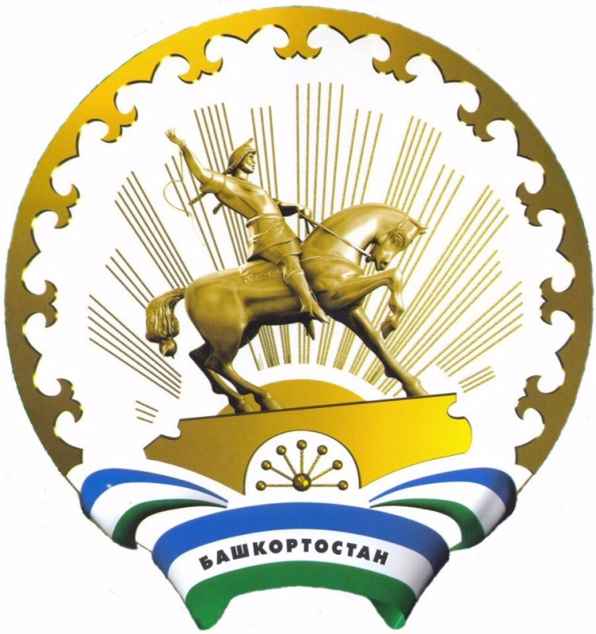
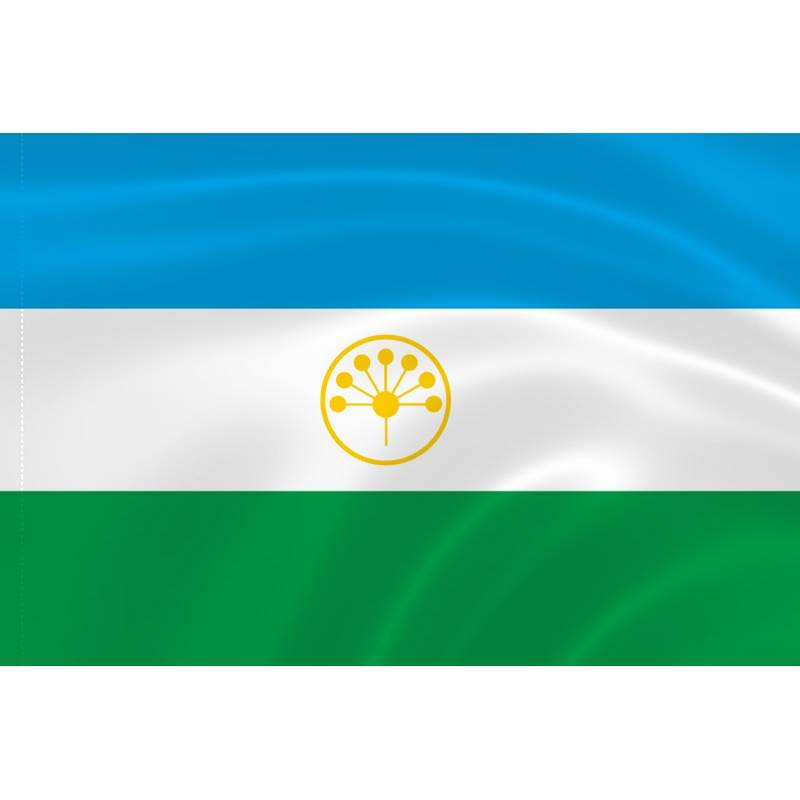
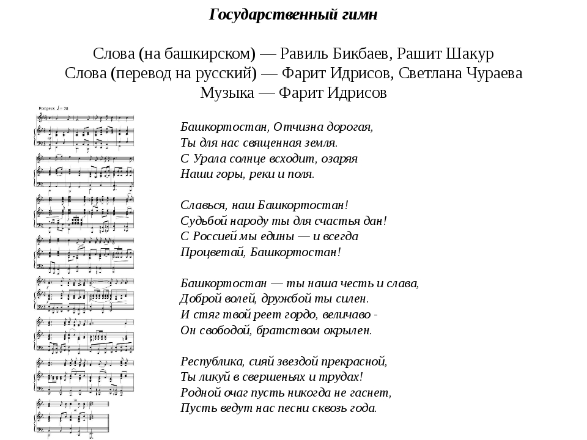

Герб Республики Башкортостан (Башкирии) был принят Парламентом Республики Башкортостан 6 июля 1999 года. Числится за № 164 в Государственном геральдическом регистре Российской Федерации. Автором герба является Ислахов Фазлетдин Фаррахович.

Флаг Республики Башкортостан (Башкирии) представляет собой прямоугольное трехцветное полотнище, состоящее из горизонтальных равновеликих по ширине полос:
-верхняя полоса синего цвета,
-средняя – белого,
-нижняя – зеленого цвета.
В центре белой полосы золотистым цветом изображена эмблема – круг, внутри которого находится стилизованный цветок курая, состоящий из семи лепестков.
-верхняя полоса синего цвета,
-средняя – белого,
-нижняя – зеленого цвета.
В центре белой полосы золотистым цветом изображена эмблема – круг, внутри которого находится стилизованный цветок курая, состоящий из семи лепестков.
